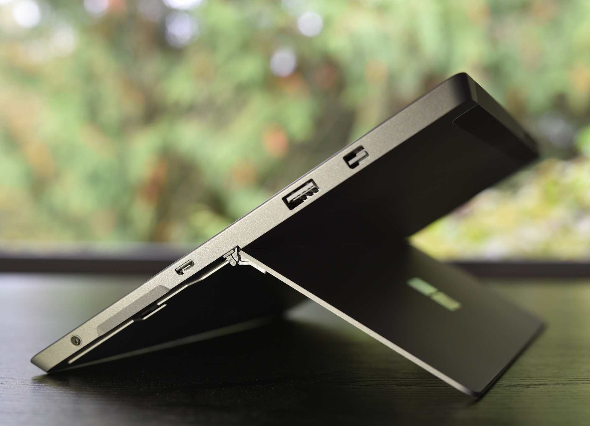

My name is Kingston. You can find me at the intersection of design, art, and engineering - wherever I get the chance to use my technical background to tackle hard problems in innovative ways. I love making. I love creating. I love thinking.
2012-2016
Princeton University
Bachelor of Science in Engineering (BSE) in Mechanical Engineering, Certificate in Materials Science
Summers 2014-2016
Microsoft Surface
Mechanical Design Engineering Intern
2016-2017
UC Berkeley
Master of Engineering in Product Design (Mechanical Engineering)
The Future
???
To wherever it may take me.
Projects
Some of the stuff I've done.
Tacto
A haptic glove for virtual reality.
HearBoi
An audio recognition device for the deaf.
Microsoft Surface
The Surface 3 and more.
Vroom
Customizable seating for self-driving cars.
Beyond Smartphones
Stretchable/flexible wearables exploration for children.
Bamboo Running Shoes
Novel sneaker design featuring a bamboo cantilever spring sole.
eccentric rotating mass (ERM) haptic motors on each finger and the palm
HC-SR04 ultrasonic rangefinder (for initial testing of sensitivity/feeling based on vibration frequency)
Leap Motion controller (hand tracking and positioning)
lightweight runner's glove base layer
The virtual reality experience is limited by its unintuitive control and ineffectiveness in targeting sense besides sight. Haptic feedback can solve these issues by intuitively providing more information to the user, allowing them to more fully experience virtual reality. We began with the premise of creating a wearable leveraging emerging flexible electronic technologies to enhance the virtual reality experience. The idea that we decided to develop is a glove-type array of sensors and actuators that can provide haptic feedback for VR users to feel virtual objects as they are immersed in the virtual experience. Our current stage is technological research and prototyping to understand the capabilities of haptic actuators to develop artificial perception of texture and to generate a human-computer interaction "haptic language." We aim to allow users to immediately understand when they are touching a virtual object or surface. We predict that this type of technology will be a major milestone in the maturation of the virtual reality experience.
User Research and Concept Generation
The Beyond Smartphones capstone project, in partnership with Samsung and the Stanford Bao Lab, is an ongoing endeavor in designing and fabricating wearables for augmented/virtual reality that leverage flexible/stretchable electronics. Our team’s first step was conducting interviews and attending various events and activities related to the industry to gain a better understanding of where technology currently stands, such as the Berkeley Symposium on Virtual and Augmented Reality and Applications (VARA). Observations made from these events led to the understanding that augmented and virtual reality, despite the many applications that exist, are both heavily focused on the sense of sight. As such, it was made apparent that wearables, a category that expands beyond some sort of design for the eyes and head, were most certainly not a saturated market for AR/VR. In addition, the wide array of uses for AR/VR that were demonstrated at these events helped us understand that AR/VR is applicable to a myriad of users with different needs. Through further research and interviews, we gathered that haptics would have a major impact on the perceived realism and level of engagement in virtual reality. We thus decided to home in on ideas of tactile feedback through wearables that could enhance the VR experience.
I created concept sketches for the team's ideas for haptic wearables that might assist in augmented/virtual reality applications. At this stage, the glove form factor was already taking shape, combined with a vision of how the haptics might interact with what people see in virtual reality.
Design and Fabrication
I refined our glove concept through rendering CAD models in Autodesk Fusion 360.
We created a first-pass prototype using ERM motors hooked up to an Arduino Flora microcontroller. At our first stage of testing, we used an ultrasonic rangefinder to trigger the haptic motors to vibrate using real-world shapes before jumping into a virtual reality environment.
This test was intended to calibrate the vibrational characteristics of the motors and how they feel to the user depending on different circumstances (ie. hand brushing over a bumpy or smooth texture, touching a boundary, etc.) An accelerometer was also installed to input motion data to create acceleration-dependent vibration. In doing so, we wanted to observe the users’ recognition of object boundaries and shapes without being able to rely on the sense of sight. This motion occurred at different distances from the object, and allowed us to document how accurate the perception of a shape or boundary was related to the haptic feedback provided at a distance from an object.
Our main takeaways were: the hand tracking reference needs to occur near the actuation points, a visual stimulus is critical in providing hand adjustment before the haptic effect occurs, and the effect must vary in intensity as you come closer with an object simulating the reaction force from the surface. We took these results and use them as parameters for our next prototype -- merging the glove with a stationary virtual environment. For this, we used Leap Motion to track the position of the hand and correlate it with the proximity from the object.
The 2nd stage of testing transitioned to a virtual environment, with hand tracking done using a Leap Motion controller. We used Leap Motion’s provided Unity asset package to bring tracked hands into the virtual environment. Upon one’s hand coming in contact with one of the objects on the table in the Unity stage, a script would trigger a function that would send a signal via serial port to the Arduino on the Tacto glove to activate the haptic motors. Initial functionality was limited to a binary reaction—the motors would be off until triggered, after which all motors would fire at a constant, uniform amplitude. This allowed for end-to-end feedback between a person’s physical hands and the electronics on the Tacto glove. This iteration of the glove was tested at the Berkeley SkyDeck AR/VR pitch competition by various attendees, who were impressed by the tactile feedback and agreed that variable-force feedback would be beneficial to a more realistic feeling.
Future Plans
This was a capstone project for the UC Berkeley Master of Engineering program from which I graduated in May 2017. Due to the promise that Tacto has shown thus far, the project will continue under the wing of the next cohort of Master's students in 2018. Things for future consideration include increasing the type of feedback the glove can give, integrating flexible electronics from the Stanford Bao lab, and garnering funding to enable the production of multiple gloves that can be tested simultaneously by multiple people.
My full capstone report is available for viewing here.
Date: 2016-present
Subject: UC Berkeley Master of Engineering Capstone Project
HearBoi
A sound detection device for the hearing-impaired community that alerts users with SMS notifications.
clamshell design with snap fixtures for ease of assembly/disassembly
Raspberry Pi microcontroller
USB microphone
gold-painted stands for stability and aesthetic
HearBoi was a semester-long project and brainchild of a five-person group consisting of software and mechanical engineers. HearBoi ran off a Raspberry Pi and USB microphone that would process sounds in the immediate environment. After a threshold was passed, the device would begin recording. If the recorded sound matched the audio fingerprint of a sound stored in the HearBoi's database, an SMS notification would be sent to the user. Unlike many new IoT gadgets being churned out today, HearBoi does not require a smartphone to function. The reason we decided to use a SMS service was so that the elderly, and others, who might not have the newest mobile technology would still be able to benefit from HearBoi.
Concept
As the creative lead for the team, I designed the physical enclosure for the HearBoi as well as promotional materials. Initial sketches (above) show the evolution of the general shape of the enclosure, as well as a rough outline for how the two halves would come together with snap fits. I wanted HearBoi to be simple and unassuming while appealing to a wide audience. Thus, I designed a compact, rectangular enclosure with minimal faces that would be just enough in size to house the Raspberry Pi and microphone.
Design and Fabrication
The renderings above show the HearBoi in exploded view, the mounting system for the Raspberry Pi, and the snap-fit mechanisms. The Pi was screwed down using #4-40 screws into hex nuts that were glued inside four guiding wells. The snap-fit was a simple design that featured four bumps (on the other half of the enclosure, not pictured) that would slide into the corresponding four slots. Grooves with circular end reliefs were cut to allow flexure of the slots as the bumps slid into place.
The enclosure was designed to just fit the Raspberry Pi and microphone to minimize material and cost (the 3D printer used for the enclosure was expensive!).
Results and Final Thoughts
I designed and printed a 30" x 40" poster in Photoshop for our final presentation that summarized the features of HearBoi in an easy-to-follow format.
Our team was excited to demo HearBoi on the final day of class. Future improvements could be made on the microphone (the one we used was $6 off Amazon and did not have a great range), but we showed full functionality during our demos. The enclosure was very sturdy, but the stands could be made a bit thicker because the prototyping resin they were 3D printed out of was not the most durable. That being said, many people were easily convinced that the stands were made from copper, even though they were the same 3D printed material as the main body, just sprayed with an even coat of metallic paint.
Mechanical design for the Surface 3 and the newly-released Surface Laptop.

Role: Mechanical Design Engineering Intern
Responsibilities: FTE-level component ownership (FPCA and battery), CAD, engineering drawings, DFM, tolerance analysis, PPAP analysis optimization, metrology and testing
2014
During my first summer at Microsoft in 2014, I worked on the Surface 3. Prior to this experience, I had little knowledge of mass production, design for manufacturing (DFM), and CAD for consumer electronics. That all changed with my internship at Microsoft. I was a part of a diverse team of engineers who were experts on everything from buttons to PCBs to touch display modules. As an intern, I performed crucial testing for various components to ensure device integrity. I also helped reduce manufacturing costs by removing unnecessary components, namely magnets, from the Surface 3. These magnets, originally used to ensure the kickstand closed flat against the main body of the Surface, were expensive. Through rigorous testing and metrology, I determined that the magnets were actually adding negligible assistance to flatness while increasing the force required to open the kickstand.
2015
Returning again in the summer of 2015, I was granted increased responsibility on a new project, the Surface Laptop. I was given ownership over the batteries of the new product during the early design phase. While I primarily performed testing the previous year, my role shifted to CAD in 2015. In addition, I began working across teams with electrical engineers and industrial designers, who provided directions from their ends that constrained the battery in certain ways. It was an ultimate system of checks and balances - while the battery could get better in one way, say battery life, it would spell doom for aesthetics because of how much thicker they would have to be. Changing one variable would affect a whole host of others and create trickling changes to components that might not have an immediate connection to the batteries. In the end, I was able to design batteries with dimensions that had the battery life electrical engineering wanted
2016
In 2016, my responsibilities increased again as I was given ownership of an FPC sub-assembly for the Surface Laptop project, now further down schedule. More than just a single component this time, the FPC sub-assembly was a complex challenge of many smaller components with more defined shapes than the battery I had worked on the previous summer. I worked with suppliers on DFM and making sure we could hit the tolerances we wanted through a lot of tolerance analysis stacks. In addition, I worked closely with the drafting team to create drawings for the FPC assembly in various states to be sent to the suppliers for manufacturing and inspection. At the end of the summer, I successfully locked the assembly design for final production, a daunting but incredibly rewarding accomplishment.
Date: Summers 2014, 2015, 2016
Role: Mechanical Design Engineering Intern
Vroom
Customizable seating for self-driving cars.
In this course, titled "Reimagining Mobility" and sponsored by Ford, I was asked to define the transportation experience of the future. The course was deliberately open-ended, and teams went in a myriad of directions for how they envisioned the future of mobility. My team, composed of four mechanical engineers and one software engineer, came up with Vroom, an autonomous vehicle service that allows the user to customize their seating space for a more personal experience.
User Research and Concept Generation
At the beginning, we asked friends, family members, and colleagues what their pain points were with de facto transportation. From their answers, we realized that San Francisco/Berkeley residents need a method of transportation that is as cost effective as public transportation without the negative aspects (loss of personal freedom, lack of upkeep/innovation). Despite overwhelmingly negative feelings about public transportation and a general preference towards aspects of personal transportation, many of our users take public transportation anyway because it is the cheapest option.
We asked ourselves the question, "How might we make public and shared transportation options as comfortable and predictable as ones you own?" To that end, I created concept sketches for public vehicles like subways and trains for how users might be able to store their belongings safely and securely. This was soon replaced by the idea of designing for self-driving cars, which our team believed was not only an imminent phenomenon in the near future, but one with plenty of opportunities.
The concept we came up with was called Vroom. We envisioned users in the future having the ability to order autonomous cars with modular interiors that they could personalize during the ordering process in a mobile app. I illustrated a storyboard (shown below) that depicts Zenon, a 26-year old astrophysicist in the year 2040, struggling with normal public transportation before being introduced to Vroom.
Zenon, who takes the bus to work, reaches her breaking point when a series of unfortunate events occurs all in a single ride. Stranded on the side of the road, Zenon is introduced to Vroom through divine intervention. Using the app, she is able to order a customized interior with soft seats and climate control set to her comfort level. She ultimately arrives at work feeling like a confident superstar.
We went out around the UC Berkeley campus to do user testing with index cards to simulate the options that users could customize. Initial ideas we wanted to test included lighting, window tinting, and even aromas. From our testing, we filtered down to a handful of core parameters that people cared the most about. These were centered around seating, visuals, temperature, food/drink, and lighting.
App Design
I made early concept mock UIs and wireframes for what the user might see during option selection. Through testing and iteration, the design eventually landed on the following:
The design features a minimalistic and colorful environment, with a scrolling carousel of personalization categories and a list of options for the selected category center-page. The user can set up different themed interiors such as "Relax" or "Office," which they can customize and easily select the next time they order Vroom. My team and I rendered images of analogous household rooms that fit each theme. These images are displayed at the top of the screen to invoke a feeling conducive to their particular themes (ie. a cozy, warm-toned bedroom for "Relax").
Physical Design
In addition to creating an app for Vroom, two physical prototypes were made to explore how a car might have its interior customized quickly and efficiently. These two concepts were dubbed For Rail Tho and Motherload.
The first concept, For Rail Tho, features two side-mounted rails in the interior for different items, to slide onto. The mechanisms would be similar to Picatinny rails on firearms.
The second concept, Motherload, is similar but differs in that the entire floorboard of the vehicle can be removed and replaced, with the customized items mounting on the floorboard before the entire setup is then loaded back in the car. The items would be secured to the floorboard through threaded holes in the ground, much like a CMM fixture plate.
Future Work and Conclusion
Beyond the mechanisms of the vehicle and mobile app, we also thought about the logistics of personalizing a car and the associated costs. We envisioned a three-tier plan based on the level of customizability the user wants:
Preset rooms have the lowest level of customizability, but also the lowest cost. These include basic setups that are popular across a wide audience of users and are prepared ahead of time for immediate dispatch upon being ordered.
The customizable furniture tier is the middle tier, with mid-level customizability and cost. Options for customizability will be restricted to what is available at the assembly line from which a car comes from. This is the tier we see most orders will fall in.
The personal furniture tier is the highest tier of premium comfort with the highest level of customizability. Unique furniture and features can be curated by the rider ahead of time and processed at the assembly line. Due to the uniqueness of each order, this tier operates on a longer timeline and should be used for trips or vacations planned in advance.
The rise of autonomous vehicles will completely revolutionize what transportation looks like in the future. Without the need for steering wheels and to keep our eyes focused out the front windshield, a whole new set of possibilities are unlocked. Hands and feet, now freed from operating the vehicle, can type on a keyboard, hold a book, or simply relax.
Emerging stretchable/flexible wearables exploration in the children and AR/VR spaces.
The Beyond Smartphones capstone project, in partnership with Samsung and the Stanford Bao Lab, is an ongoing endeavor in designing and fabricating wearables for children that leverage flexible/stretchable electronics. Using the human-centered design process, my team of six Berkeley Master of Engineering students performed user research - from which we gained insights into the needs of the people in our target markets - to generate concepts and create prototypes.
User Research and Concept Generation
My team and I interviewed more than 20 people, both parents and children, from the United States, Venezuela, and China in an effort to understand what they wanted more of and how a wearable could serve those needs. We spent months finding patterns and trends in the precious data from our interviewees. Eventually, we discovered that our users' greatest needs could be organized into five core topics: Growth/Health, Communication, Creativity, Education, and Safety.
I created concept sketches for the team's ideas for wearables that could satisfy those five core topics. Concepts ranged from Fore!, a touch-screen forearm wearable for children to draw on and communicate with others, to Seamless Sensing, smart clothes that enable parents to maintain emotional connectivity with their children and stay aware of how their children are feeling.
Prototypes
We created low-fidelity prototypes of Fore! and Seamless Sensing at the end of the Fall 2016 semester. Fore! was cut and sewn from fabric with velcro straps and a mock screen housed in vinyl. A child's baseball tee was modified for Seamless Sensing. In order to convey the novelty and flexibility of the electronics we would eventually receive from the Stanford Bao Lab, I designed a "widget" in CAD that would be sewn onto the prototypes.
The widget featured cosmetic markings that resembled PCB traces and a centralized LED that added some pop. The widget was 3D printed using red Ninjaflex material on a Type A 3D printer. Ninjaflex granted the widget flexibility that normal PLA 3D printing material couldn't.
Epilogue
The work and learnings from this class were completed to directly aid my Master of Engineering capstone project. At the time of this course (Fall 2016), my capstone team was pursuing the development of a wearable for children as well as one for use with augmented/virtual reality. In 2017, the children's track of the project pivoted to the development of a fetal monitoring device for expecting mothers. Our team split in half to pursue each track, with my focus on the AR/VR side. I was responsible for developing a virtual reality haptic wearable called Tacto - more information can be found under the Projects section of my website.
The design and exploration of a bamboo spring-actuated running shoe.
The impetus for my undergraduate thesis was to engineer, design, and fabricate a running shoe whose primary mechanism of shock absorption in the sole was a cantilever spring made of wood and/or a woody material. While modern sneakers boast an impressive breadth of shapes, colors, and well-marketed sole technologies across different models and brands, they are manufactured using a rather rigidly-defined arsenal of synthetic plastic-based fabrics and foams. With that said, I wanted to explore how the design of a sneaker would change if it were instead made of wood and other naturally-derived materials. The primary investigation was to see if a sneaker comprised of sustainable and environmentally-friendly components would be able to match or even exceed the performance of plastics-based running shoes that have become the standard. Aesthetics were also an important consideration for the final product.
Concept
Early design concepts for the shoe focused primarily on the sole, as having a good working mechanism for shock absorption was cardinal to the comfort performance of the shoe. The picture above depicts two rough concepts for the sole mechanism. The top drawing features a complicated, Z-shaped spring at the heel that compresses downwards when a load is applied. The heel of the foot hovers above the wooden sole and is able to float downwards when the spring compresses. The idea was to have the spring and wooden sole made from a single piece of wood or laminated, glued, and cut out precisely for a seamless design. The sole is enlarged in the drawing and would be made much thinner in reality.
This design was cause for major concern despite its incredibly unique look. For one, the complexity and number of bends of the Z-shaped spring could prove to be a manufacturing nightmare. If it were too delicate and poorly-made, it would easily snap into several pieces, especially under the 1.5-3 times body weight load predicted to be enacted on the shoe. The height of the floating heel might also cause discomfort as the foot would be biased forward inside the shoe. Debris could also make its way into the gap while running and become trapped. This would cause an unexpected jolt of pain if the wearer’s heel was able to come down and make contact with the foreign matter. How the upper could be joined robustly to the spring was also a point of curiosity. The spring would also have to be attached on either side of the upper since a foot and ankle would be located in that location within the upper. This could cause issues with the spring, if it protruded laterally far enough, chafing against the opposite foot or leg.
After taking all these points into consideration, a design was created ready for the 1st iteration of modeling, manufacturing, and testing. An illustration of the sole of this design can be seen above. This sole features a single piece of laminated wood that begins at the heel, curves under at the toe, and continues back to the heel to create a cantilever ”springboard” design. This double-decker allows the foot to be supported by the laminate with a floating design. The front half of the gap made in the laminate is filled once again with a matrix of organic material with some amount of compressibility. However, in this design, it is not as crucial because it is located in the forefoot where shock attenuation is less important. The heel, as stated, is floating and the cantilever becomes the sole mechanism of shock absorption. The singular design is conducive towards ease of manufacturability and the amount of material usage. Laminated as opposed to solid wood was chosen because of lamination’s ability to minimize the effect of natural defects present inside wood, such as cracks and weak grain lines.
Design and Fabrication
A size 10 shoe last was purchased and taped up to create a stencil for the two pieces of the upper (tongue/vamp and quarters/heel). A sketch of the upper design was then drawn directly on the tape while it was still on the shoe last. After that, the tape was cut off and a stencil was created for the two pieces of the upper. The stencil was then digitized using Adobe Illustrator and a line art file was sent to the Princeton MAE machine shop’s laser cutter to precisely cut out the hemp fabric in the right shapes.
By crosslaminating in alternating grain directions, the anistropic nature of wood can be made more isotropic. Lamination with thin pieces of veneer also allows the generation of more drastic curves, as each thin piece is able to bend much more than one thick chunk of wood.
The sole mold was automated in a Bridgeport Torq-Cut CNC mill from blue DOW Styrofoam-brand extruded polystyrene (XPS). This material was perfect because of its high compressive strength, low cost, ease to machine, and abundance in the Princeton University MAE machine shop. A couple of layers of XPS had to be glued together with Gorilla Glue to create a work volume with the right height that could accommodate the toe spring.
A steam bender was created from plywood to provide a way to temporarily soften the bamboo veneer to make it easier to create the bend in the spring. Through heat and steam, steam benders relax the lignin and wood fibers (or in this case, bamboo fibers), making the work piece more compliant to forming around curves. Steam was provided through a basic electric kettle piped into the main chamber by a short PVC pipe.
The adhesive used for the lamination process was Titebond III Ultimate Wood Glue, a popular choice for DIY longboard and skateboard builders. Unlike resins and epoxies, this polyvinyl acetate (PVA) water-based glue is both non-toxic (in keeping with the environmentally-friendly mission of this thesis) and flexible when dry, a crucial characteristic for a component that will be undergoing a lot of dynamic load. A foam roller was used to apply the glue evenly to each sheet of veneer. To create even pressure on the laminated veneer around the sole mold, a vacuum press was purchased from the Roarockit Skateboard Company. The vacuum press is comprised of heavy-duty vinyl that conforms and tightens around the object inside as air is evacuated via a small hand pump.
After lamination, the different components of the sole were glued together using contact cement and then shaped using a bandsaw and belt sander to the form of my foot. The forefoot was made of laminated layers of cork for cushion and weight-saving (instead of wood). The cork was was contoured with the same bandsaw and belt sander combination.
Using the last, the upper was formed and glued with contact cement to maintain a three-dimensional shape. Hemp thread loops were sewn to the bottom of the upper to create the lacing system. After that, came the final step of using more contact cement and adhering the upper to the sole. The heel counter was also glued on with contact cement as the final touch. Shoelaces were obtained from the author’s basketball shoes due to their color and length, which ended up working well with the finished shoe. The process was then repeated with a second shoe to create a matching pair.
Force testing was also completed on both the left and right finished shoes to determine how much deflection in the cantilever spring would occur under load. A mock ”heel” was machined out of high density polyethylene (HDPE) and used in the Instron to press down as a heel would inside the shoe as shown in Figure 5.19. Both heels were able to compress down until the top of the spring made contact with the bottom.
Final Thoughts and Future Work
In addition, another concept was created and modeled in Creo that I did not have the opportunity to create. The primary difference in this design is a lack of a curved cantilever spring. Rather, two pieces of laminate are glued together at the forefoot in a shape reminiscent of a pair of tweezers or a wishbone. The advantage of this design is that the difficulty of producing the curve of the previous design will be nonexistent. Adhering two flat faces is a much simpler task. In addition, the gap between the bottom and top laminates is no longer limited by the radius of curvature of the bamboo. Now, the gap can be made as narrow as possible to lower the wearer’s center of gravity and provide both more comfort and stability. The one downside with this design, however, is the thickness of the joined laminate at the forefoot. This area will be twice as thick as elsewhere and could have serious consequences for flexibility and liftoff. Otherwise, this design appears to be easier to manufacture, maintaining the cork midsole and heel counter.
Running shoe technology is constantly changing. Companies left and right are always introducing new ways of making oneself a better athlete. While there is certainly no shortage of innovations, most, if not all, in recent times are granted by the petrochemical industry. Though seemingly counterintuitive and maybe even anachronistic in the 21st century, paying closer attention to how a material like wood could (literally) propel us into the future could yield the next big thing. Wood has the ability to store incredible amounts of energy through flexure, as evidenced by bows and longboards. Its beauty and aesthetic quality are highly valued. These two facets combined sound like the perfect description for a modern running shoe.
Subject: Princeton University Mechanical Engineering Senior Thesis
Chinese-Style PC Case
A desktop gaming PC case made from laser-cut wood.
Features:
Chinese-themed design inspired by traditional lattice windows and patterns
flexible scroll design for ease of removal and access to interal components
large 200 mm front fan for gratuitous air intake and thermal regulation
rear cutout for an optional 120 mm fan for additional air flow
handles for transportation and handling
bolted design with interlocking box joints for disassembly and maintenance
cutouts for cable management and zipties
I've been playing video games since my hands could barely hold the original Xbox controller (yes, the massive 1st-gen version). I began tinkering with desktop PCs in early high school and seeing the amazing cases coming from companies like Asus and HP's brief Voodoo line, I always wished I had the resources to design and create my own case from scratch. The opportunity finally came while at Berkeley, where I had an array of prototyping tools like laser cutters and 3D printers at my disposal. I wanted to create a case with both unique features and qualities that had some personal meaning. Looking towards my Chinese heritage for inspiration, I envisioned my case as more of a furniture piece that would be unintrusive in a room and less of a standalone enclosure for the cutting-edge electronics it would house that would be the centerpiece of the space it occupied. As such, wood quickly became my choice material because it could offer the warmth and traditional look I was going for.
Concept
The case design is simple overall and roughly cube-shaped. The front, rear, base, and motherboard panels are made from laser-cut, 1/4" thick birch plywood. The remaining three sides of the case (not pictured in the CAD model) are connected in the form of a wooden slatted scroll that drapes over the top and is supported by the front and rear panels.
Design and Fabrication
The rear panel (shown above) features all the necessary I/O cutouts for the motherboard, graphics card, and power supply unit. A Chinese latticework pattern was also cut to mount a 120 mm case fan for airflow.
The front panel has a larger latticework cutout for the primary 200 mm fan that draws large volumes of air into the case. Cosmetically, two dragons - specifically from the Qing Dynasty flag - are laser-scored into the panel. Both the front and rear panel also have handles at the top for ease of handling.
The slotted design of the panels allowed them to fit together precisely. The correct fit was crucial as the cutouts on the rear panel would have to align with the motherboard components when assembled to ensure that no interference was present and peripherals could be plugged in. To maintain a level of modularity, the panels would be secured together later on with corner/angle braces and nuts/bolts. This would allow the case to be disassembled for transportation or maintenance.
The scroll that would form the remaining three sides of the case required a little more handiwork than the panels to create. After cutting the slats (43 total) and etching a portion of Chen Rong's Nine Dragons painting - a feat that took almost 2 hours to complete on the laser cutter - the slats needed to be threaded together by hand.
I used cotton twine in an interlocking weave through pre-made holes in the slats to hold them together. Threading was a rather tedious task considering the small size of the holes, so a pair of tweezers was required to carefully poke the threads through and pull them out the other side.
The panels were finished with Minwax Wood Finish stain in "Sedona Red" and sealed with a few coats of Varathane satin polyurethane. The scroll was left in its natural birch color to contrast the panels (but also because the stain would darken everything and make the painting harder to see) and sealed with the same polyurethane.
An advantage of the unique scroll design that became immediately apparent was how it allowed the sides to be "peeled" up for access to the interior. In fact, because the scroll spanned three sides, components could be accessed from multiple angles when it was removed completely. The scroll, however, would still remain rigid and protect against impacts to the case when closed. Many existing computer cases only allow easy access from a single side of the case, and even then the panel would need to be unscrewed and unseated for full removal.
Full Assembly
Even after measuring everything multiple times and using CAD software to create the path files for laser cutting the panels, I was pleasantly surprised at how well everything fit together in the end. I was even able to install the I/O shield that creates a nice seal around the I/O components, something I had originally chosen to ignore to focus on other parts of the design.
Assembly was a fun task, granted everything came together as I had imagined it would with little issue. In addition, I soldered a button purchased at a local electronics store to some wire and headers to act as my power button. This was screwed into place on the front panel of the case. I also crafted a dust filter for the large 200 mm fan in the front out of aluminum screen door material that I found at Lowe's. I cut out two pieces at 45-degree angles and stacked them to minimize the total mesh size in order to prevent as much dust as possible from entering my computer.
Final Thoughts
Ultimately, I was incredibly excited to have finally realized a childhood dream of mine that seemed so distant for a long time. I was able to use the CAD and prototyping skills I had picked up as a university student to create something I use every single day. With careful planning, I ran into few obstacles along the way. The hardest part of the whole process was actually finding CAD models of computer components that had accurate representations of industry standard dimensions, which I needed to model my case around to size everything correctly. I eventually stumbled upon a model on a PC building forum vouched for by its members, crossed my fingers, and went with it. Fortunately, my trust was placed in the right people and everything worked out.
I look forward to using this case for many years to come. When Moore's Law finally shrinks everything down to the size of a pea, I'll take comfort knowing that I can display this case as a centerpiece somewhere in my home.
Date: 2017
Subject: Personal Passion Project/Just Because I Could